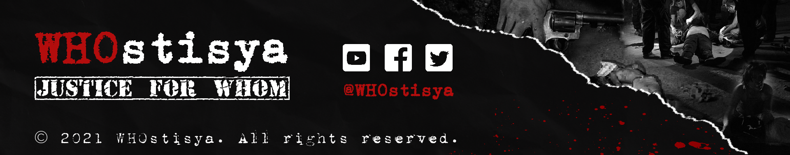

|
|
|
VIDEOS This is how the Philippines is fighting drugs |
ARTICLES National suicide |
NEWS Philippines war on drugs may have killed tens of thousands, says UN |
RESEARCH PAPERS Governing through Killing: The War on Drugs in the Philippines |
|
Lived Experiences of EJK Victims' Families: An Interpretative Phenomenological Study
BY ANGELADA, MANALANSAN, ALGECERA, DELA CRUZ, & TADEO The following details a thorough investigation about the issue of extrajudicial killings in the Philippines and the extent of its crimes against humanity to the families of the victims. "Poor people, dead people," as one may say. Is it really a solution or a mass execution? READ MORE |
|
Watch
Now
More >
|
Top
Article
|
Latest
News
|
|
By Matthew Tostevin, Neil Jerome Morales War on numbers: Philippines targets drug killing data |
CONFRONTING EXTRAJUDICIAL KILLINGS UNDER DUTERTE
Teddy Casiño September 19, 2016 LANDMARK BILL VS EXTRAJUDICIAL KILLINGS PUSHED Lian Buan July 7, 2019 PHILIPPINES DRUG WAR: DO WE KNOW HOW MANY DIED? Howard Johnson and Christopher Giles November 12, 2019 DRUG WAR KILLINGS INCREASED DURING COVID-19 LOCKDOWN: WATCHDOG Zhander Cayabyab September 10, 2020 |
|
|
Pulis saktong 'naglaho' noong barilan? 'Double killing' sa EJK victim ipinagtataka | TV Patrol |
||
|
ABS-CBN News November 7, 2020 Nababahala ang Commission on Human Rights dahil tirik ang araw at sa ospital pa nangyari ang pagpatay. |
| MORE INTERESTING ARTICLES | |||||
|
What Happens to The Families Left Behind in Duterte’s Deadly Campaign Against Drugs
BY Priyanka Boghani October 8, 2019 |
U.N. Rights Council to Investigate Killings in Philippine Drug War
BY Nick Cumming-Bruce July 11, 2019 |
Guevarra assures CHR role in EJK cases review
BY Joel R. San Juan May 21, 2021 |
|||
|
RECOMMENDED VIDEOS
|
||
|
DUTERTE SAYS HIS ONLY 'SIN' IS EXTRAJUDICIAL KILLINGS
Rappler September 28, 2018 |
||
|
THE PHILIPPINE PRESIDENT'S WAR ON DRUGS
CNN March 6, 2017 |
||
|
INSIDE THE PHILIPPINES' BLOODY WAR ON DRUGS
Univision Noticias November 5, 2017 |
||
|
TV PATROL: SUNOD-SUNOD NA EXTRAJUDICIAL KILLINGS, PINAIIMBESTIGAHAN
ABS-CBN News July 8, 2016 |
'NO CASE' OF EXTRAJUDICIAL KILLING UNDER DUTERTE - PNP
Rappler October 6, 2017 |
|
|  |